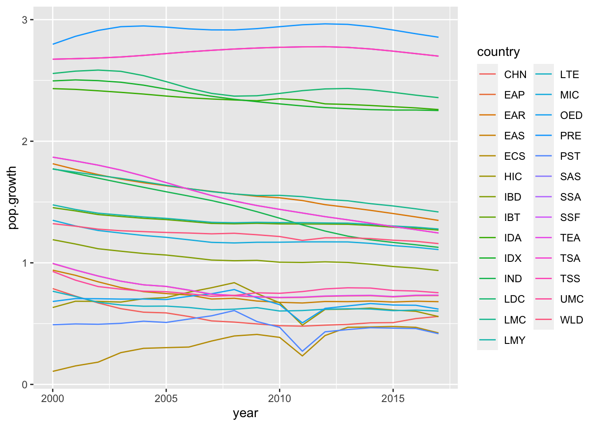
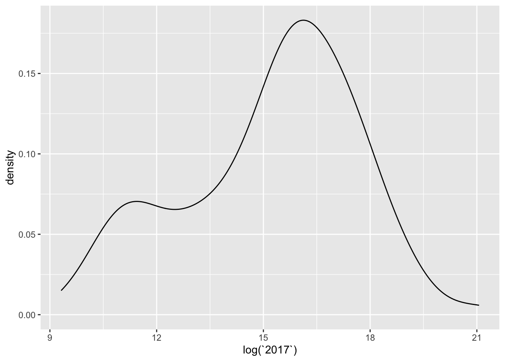
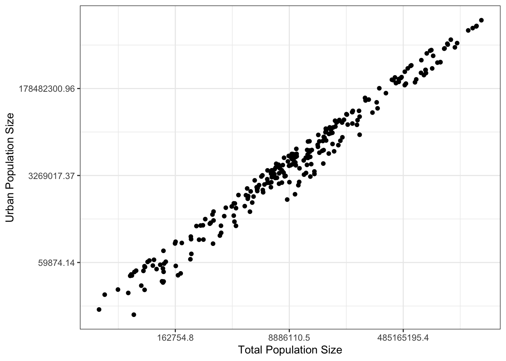

Now that we have dipped our feet into plots and stats in R, I think
you are getting a better sense of the fact that ‘wrangling’ or
‘manipulating’ data is one of the biggest steps to becoming proficient
in R and all that it has to offer.
For example, for any given analysis, you may have to subset data,
filter out certain data that don’t meet some criteria, focus in on a
select set of variables of interest, calculate means, and variance for
different groups, etc. etc.
These tasks are where the packages dplyr, tidyr and other packages in the
tidyverse–a series of packages
designed for all kinds of data tasks. This also includes the popular ggplot2 package for
graphics.
The tidyverse packages are constructed by Hadley Wickam. There are several books that
cover how to use these packages, including R for Data Science
which is available for free as an
online book

In this module, we’ll be learning some functions from the packages
dplyr and tidyr.
We will do this by playing with data from the World Bank and World
Health Organization (WHO)!
Installing and loading packages we need for this module
One can install each package separately, but you can also just
install all “tidyverse” packages simply by running this command:
install.packages("tidyverse")
install.packages("wbstats")
Note that this simply downloads the packages onto your computer. When
you are ready to use them, you will have to load the package onto the
environment by running the function
You now have the package downloaded on your computer, but to actually
use it, you have to load the package. We can load the entire
tidyverse package (or, if you prefer, you can just load the
tidyr package).
library(wbstats)
library(tidyverse)
## ── Attaching packages ─────────────────────────────────────── tidyverse 1.3.2 ──
## ✔ ggplot2 3.3.6 ✔ purrr 0.3.4
## ✔ tibble 3.1.8 ✔ dplyr 1.0.10
## ✔ tidyr 1.2.1 ✔ stringr 1.4.1
## ✔ readr 2.1.2 ✔ forcats 0.5.2
## ── Conflicts ────────────────────────────────────────── tidyverse_conflicts() ──
## ✖ dplyr::filter() masks stats::filter()
## ✖ dplyr::lag() masks stats::lag()
Two important thing to notice here. First, the
message tells you what packages were actually loaded as part of the
tidyverse “metapackage”. You see that this includes 8 packages:
ggplot2,tibble, tidyr, readr, purrr, dplyr, stringr, and forcats.
Second, the message tells you that there are two functions in the
dplyr package that conflict with existing functions:
filter() and lag(). This is sometimes very
important to know! This means that the filter() function
works differently before and after loading this package.
Some things to know about
getting started with ‘tidyverse’
Pipe Operator (%>%): tidyverse makes
use of the pipe operator %>%, which allows you to carry
over the output of one function to the next function. This can make
series of data manipulation sequences much more efficient.
Tibbles: “tibble” is a special class of dataframe
that is used in tidyverse. It is largely the same as a dataframe but it
has some features (or rather, lack of features) that make for ‘defensive
coding’. That is, it forces you to avoid dangerous operations, such as
changing variable names or types (you have to explicitly do this) or
allow “partial matching”.
To learn more about tibbles, start here
1. Introduction to the datasets
The World Bank actually makes it very easy to download a huge amount
of data very easily. You could just go to the World Bankd Open Data site and
search for data and download them in a few clicks. There are even
packages such as WDI and wbstats that allow
you to query and pull data from this site from within R.
However, for the purposes of this exercise, we will deal with several
datasets that are included in the packages we have loaded above.
1.1. world_bank_pop: Population data from World Bank
(2000-2017)
First is the world_bank_pop dataset that is included in
the tidyr package (which is part of the the tidyverse
suite). Start by pulling up the help file for the dataset
?world_bank_pop
Let’s take a peak at the data, which is in “tibble” format:
world_bank_pop
## # A tibble: 1,056 × 20
## country indic…¹ `2000` `2001` `2002` `2003` `2004` `2005` `2006` `2007`
## <chr> <chr> <dbl> <dbl> <dbl> <dbl> <dbl> <dbl> <dbl> <dbl>
## 1 ABW SP.URB… 4.24e4 4.30e4 4.37e4 4.42e4 4.47e+4 4.49e+4 4.49e+4 4.47e+4
## 2 ABW SP.URB… 1.18e0 1.41e0 1.43e0 1.31e0 9.51e-1 4.91e-1 -1.78e-2 -4.35e-1
## 3 ABW SP.POP… 9.09e4 9.29e4 9.50e4 9.70e4 9.87e+4 1.00e+5 1.01e+5 1.01e+5
## 4 ABW SP.POP… 2.06e0 2.23e0 2.23e0 2.11e0 1.76e+0 1.30e+0 7.98e-1 3.84e-1
## 5 AFG SP.URB… 4.44e6 4.65e6 4.89e6 5.16e6 5.43e+6 5.69e+6 5.93e+6 6.15e+6
## 6 AFG SP.URB… 3.91e0 4.66e0 5.13e0 5.23e0 5.12e+0 4.77e+0 4.12e+0 3.65e+0
## 7 AFG SP.POP… 2.01e7 2.10e7 2.20e7 2.31e7 2.41e+7 2.51e+7 2.59e+7 2.66e+7
## 8 AFG SP.POP… 3.49e0 4.25e0 4.72e0 4.82e0 4.47e+0 3.87e+0 3.23e+0 2.76e+0
## 9 AGO SP.URB… 8.23e6 8.71e6 9.22e6 9.77e6 1.03e+7 1.09e+7 1.15e+7 1.21e+7
## 10 AGO SP.URB… 5.44e0 5.59e0 5.70e0 5.76e0 5.75e+0 5.69e+0 4.92e+0 4.89e+0
## # … with 1,046 more rows, 10 more variables: `2008` <dbl>, `2009` <dbl>,
## # `2010` <dbl>, `2011` <dbl>, `2012` <dbl>, `2013` <dbl>, `2014` <dbl>,
## # `2015` <dbl>, `2016` <dbl>, `2017` <dbl>, and abbreviated variable name
## # ¹indicator
Notice that each country is repeated across 4 rows. This is because
there are actually 4 different “indicators” for each country, and so
each country x indicator combination takes up a row. The rest of the
columns are years, from 2000 to 2017.
Also notice that the numbers in the column names have a backquote, or
“`” around them. In R, this allows numbers to be interpreted as text
(and column names have to be text).
So, if you wanted to pull up the “2001” column, this will NOT
work…
world_bank_pop$2001
…but this will work
world_bank_pop$`2001`
1.3. who: World Health Organization TB data (1980 -
2013)
The last dataset we will use in this module is the WHO Global
Tuberculosis Report from 1980 to 2013, which is included in the tidyr
package as who
?who
who
## # A tibble: 7,240 × 60
## country iso2 iso3 year new_s…¹ new_s…² new_s…³ new_s…⁴ new_s…⁵ new_s…⁶
## <chr> <chr> <chr> <int> <int> <int> <int> <int> <int> <int>
## 1 Afghanistan AF AFG 1980 NA NA NA NA NA NA
## 2 Afghanistan AF AFG 1981 NA NA NA NA NA NA
## 3 Afghanistan AF AFG 1982 NA NA NA NA NA NA
## 4 Afghanistan AF AFG 1983 NA NA NA NA NA NA
## 5 Afghanistan AF AFG 1984 NA NA NA NA NA NA
## 6 Afghanistan AF AFG 1985 NA NA NA NA NA NA
## 7 Afghanistan AF AFG 1986 NA NA NA NA NA NA
## 8 Afghanistan AF AFG 1987 NA NA NA NA NA NA
## 9 Afghanistan AF AFG 1988 NA NA NA NA NA NA
## 10 Afghanistan AF AFG 1989 NA NA NA NA NA NA
## # … with 7,230 more rows, 50 more variables: new_sp_m65 <int>,
## # new_sp_f014 <int>, new_sp_f1524 <int>, new_sp_f2534 <int>,
## # new_sp_f3544 <int>, new_sp_f4554 <int>, new_sp_f5564 <int>,
## # new_sp_f65 <int>, new_sn_m014 <int>, new_sn_m1524 <int>,
## # new_sn_m2534 <int>, new_sn_m3544 <int>, new_sn_m4554 <int>,
## # new_sn_m5564 <int>, new_sn_m65 <int>, new_sn_f014 <int>,
## # new_sn_f1524 <int>, new_sn_f2534 <int>, new_sn_f3544 <int>, …
This is yet another massive dataset, with 7,240 rows, and 60 columns
with very weird names. We will figure out what to do with these later
on.
2. Problem 1: “Countries” that are not countries: Merging datasets
with join functions
We are going to start by diving into the world_bank_pop
dataset.
Let’s take a peek at the dataset again and see what we have…
world_bank_pop
## # A tibble: 1,056 × 20
## country indic…¹ `2000` `2001` `2002` `2003` `2004` `2005` `2006` `2007`
## <chr> <chr> <dbl> <dbl> <dbl> <dbl> <dbl> <dbl> <dbl> <dbl>
## 1 ABW SP.URB… 4.24e4 4.30e4 4.37e4 4.42e4 4.47e+4 4.49e+4 4.49e+4 4.47e+4
## 2 ABW SP.URB… 1.18e0 1.41e0 1.43e0 1.31e0 9.51e-1 4.91e-1 -1.78e-2 -4.35e-1
## 3 ABW SP.POP… 9.09e4 9.29e4 9.50e4 9.70e4 9.87e+4 1.00e+5 1.01e+5 1.01e+5
## 4 ABW SP.POP… 2.06e0 2.23e0 2.23e0 2.11e0 1.76e+0 1.30e+0 7.98e-1 3.84e-1
## 5 AFG SP.URB… 4.44e6 4.65e6 4.89e6 5.16e6 5.43e+6 5.69e+6 5.93e+6 6.15e+6
## 6 AFG SP.URB… 3.91e0 4.66e0 5.13e0 5.23e0 5.12e+0 4.77e+0 4.12e+0 3.65e+0
## 7 AFG SP.POP… 2.01e7 2.10e7 2.20e7 2.31e7 2.41e+7 2.51e+7 2.59e+7 2.66e+7
## 8 AFG SP.POP… 3.49e0 4.25e0 4.72e0 4.82e0 4.47e+0 3.87e+0 3.23e+0 2.76e+0
## 9 AGO SP.URB… 8.23e6 8.71e6 9.22e6 9.77e6 1.03e+7 1.09e+7 1.15e+7 1.21e+7
## 10 AGO SP.URB… 5.44e0 5.59e0 5.70e0 5.76e0 5.75e+0 5.69e+0 4.92e+0 4.89e+0
## # … with 1,046 more rows, 10 more variables: `2008` <dbl>, `2009` <dbl>,
## # `2010` <dbl>, `2011` <dbl>, `2012` <dbl>, `2013` <dbl>, `2014` <dbl>,
## # `2015` <dbl>, `2016` <dbl>, `2017` <dbl>, and abbreviated variable name
## # ¹indicator
I want to start by looking at how many unique countries we actually
have here.
length(unique(world_bank_pop$country)) #this gives us the number of unique values in the "country" column
## [1] 264
You can see that there are way more “countries” here than there are
in the world. As of 2022, there are 193 countries in the United Nations,
though if we add soverign states that are not recognized by UN (e.g.,
Taiwan, Kosovo, etc.), the list is about 206… and there are more if we
include disputed territories.
The reason the World Bank data has even more than that is because
some of the “countries” include “aggregates” like “Arab World” or
“High-income Countries”.
Unfortunately, the world_bank_pop dataset does not
include any variables that allow us to differentiate the countries from
the aggregates!
So, here is where we are going to use the countrycode
package. The data in this package
3. Filtering and selecting data with filter() and
select()
As mentioned above (Section 1.1), each row is a country x indicator
combination, with 4 different indicators. The indicators are:
SP.POP.GROW = population growth
SP.POP.TOTL = total population
SP.URB.GROW = urban population growth
SP.URB.TOTL = total urban population
4. Moving between wide- and long-format data with
pivot_longer() and pivot_wider()
Dealing with complex data
World Bank Population Data up to 2017 (version included in tidyr
package):
head(world_bank_pop)
## # A tibble: 6 × 20
## country indica…¹ `2000` `2001` `2002` `2003` `2004` `2005` `2006` `2007`
## <chr> <chr> <dbl> <dbl> <dbl> <dbl> <dbl> <dbl> <dbl> <dbl>
## 1 ABW SP.URB.… 4.24e4 4.30e4 4.37e4 4.42e4 4.47e+4 4.49e+4 4.49e+4 4.47e+4
## 2 ABW SP.URB.… 1.18e0 1.41e0 1.43e0 1.31e0 9.51e-1 4.91e-1 -1.78e-2 -4.35e-1
## 3 ABW SP.POP.… 9.09e4 9.29e4 9.50e4 9.70e4 9.87e+4 1.00e+5 1.01e+5 1.01e+5
## 4 ABW SP.POP.… 2.06e0 2.23e0 2.23e0 2.11e0 1.76e+0 1.30e+0 7.98e-1 3.84e-1
## 5 AFG SP.URB.… 4.44e6 4.65e6 4.89e6 5.16e6 5.43e+6 5.69e+6 5.93e+6 6.15e+6
## 6 AFG SP.URB.… 3.91e0 4.66e0 5.13e0 5.23e0 5.12e+0 4.77e+0 4.12e+0 3.65e+0
## # … with 10 more variables: `2008` <dbl>, `2009` <dbl>, `2010` <dbl>,
## # `2011` <dbl>, `2012` <dbl>, `2013` <dbl>, `2014` <dbl>, `2015` <dbl>,
## # `2016` <dbl>, `2017` <dbl>, and abbreviated variable name ¹indicator
First, restrict the data to countries with large populations–let’s
say those above 75 percentile in population size over 2020-2017
upper.pop=world_bank_pop %>% dplyr::filter(indicator == "SP.POP.TOTL") %>% pull(`2017`)
#calculate average population size for all countries
upper.pop=world_bank_pop %>% dplyr::filter(indicator == "SP.POP.TOTL") %>% pull(`2017`) %>% quantile(., probs=0.9, na.rm=T)
upper.pop
## 90%
## 890471085
upper.countries=world_bank_pop %>% dplyr::filter(indicator == "SP.POP.TOTL") %>% dplyr::filter(`2017` > upper.pop) %>% select(country)
Just get the population growth rate data using
dplyr::filter()
left_join(upper.countries, world_bank_pop) %>% dplyr::filter(indicator=="SP.POP.GROW")
## Joining, by = "country"
## # A tibble: 27 × 20
## country indicator `2000` `2001` `2002` `2003` `2004` `2005` `2006` `2007`
## <chr> <chr> <dbl> <dbl> <dbl> <dbl> <dbl> <dbl> <dbl> <dbl>
## 1 CHN SP.POP.GROW 0.788 0.726 0.670 0.623 0.594 0.588 0.558 0.522
## 2 EAP SP.POP.GROW 0.994 0.940 0.891 0.849 0.819 0.805 0.775 0.741
## 3 EAR SP.POP.GROW 1.82 1.77 1.73 1.69 1.66 1.63 1.61 1.59
## 4 EAS SP.POP.GROW 0.940 0.897 0.844 0.797 0.763 0.747 0.735 0.702
## 5 ECS SP.POP.GROW 0.107 0.152 0.183 0.261 0.297 0.302 0.307 0.357
## 6 HIC SP.POP.GROW 0.632 0.684 0.683 0.677 0.705 0.714 0.758 0.795
## 7 IBD SP.POP.GROW 1.19 1.15 1.12 1.10 1.08 1.06 1.04 1.02
## 8 IBT SP.POP.GROW 1.45 1.43 1.40 1.38 1.37 1.36 1.34 1.32
## 9 IDA SP.POP.GROW 2.43 2.43 2.41 2.40 2.39 2.37 2.36 2.35
## 10 IDX SP.POP.GROW 2.50 2.50 2.50 2.49 2.46 2.43 2.40 2.37
## # … with 17 more rows, and 10 more variables: `2008` <dbl>, `2009` <dbl>,
## # `2010` <dbl>, `2011` <dbl>, `2012` <dbl>, `2013` <dbl>, `2014` <dbl>,
## # `2015` <dbl>, `2016` <dbl>, `2017` <dbl>
Convert this data to “long-format”
left_join(upper.countries, world_bank_pop) %>% dplyr::filter(indicator=="SP.POP.GROW") %>% pivot_longer(-c(country,indicator), names_to="year")
## Joining, by = "country"
## # A tibble: 486 × 4
## country indicator year value
## <chr> <chr> <chr> <dbl>
## 1 CHN SP.POP.GROW 2000 0.788
## 2 CHN SP.POP.GROW 2001 0.726
## 3 CHN SP.POP.GROW 2002 0.670
## 4 CHN SP.POP.GROW 2003 0.623
## 5 CHN SP.POP.GROW 2004 0.594
## 6 CHN SP.POP.GROW 2005 0.588
## 7 CHN SP.POP.GROW 2006 0.558
## 8 CHN SP.POP.GROW 2007 0.522
## 9 CHN SP.POP.GROW 2008 0.512
## 10 CHN SP.POP.GROW 2009 0.497
## # … with 476 more rows
Clean up and save as an object
df=left_join(upper.countries, world_bank_pop) %>% dplyr::filter(indicator=="SP.POP.GROW") %>% pivot_longer(-c(country,indicator), names_to="year") %>% select(-indicator) %>% mutate(pop.growth=value, .keep="unused") %>% mutate(year=as.numeric(year))
## Joining, by = "country"
df
## # A tibble: 486 × 3
## country year pop.growth
## <chr> <dbl> <dbl>
## 1 CHN 2000 0.788
## 2 CHN 2001 0.726
## 3 CHN 2002 0.670
## 4 CHN 2003 0.623
## 5 CHN 2004 0.594
## 6 CHN 2005 0.588
## 7 CHN 2006 0.558
## 8 CHN 2007 0.522
## 9 CHN 2008 0.512
## 10 CHN 2009 0.497
## # … with 476 more rows
ggplot(df, aes(x=year, y=pop.growth, color=country)) +
geom_line()

pop=world_bank_pop %>% pivot_longer(-c(country,indicator), names_to="year") %>% mutate(year=as.numeric(year)) %>% dplyr::filter(country=="CAN" | country=="USA" | country=="MEX") %>% dplyr::filter(indicator=="SP.POP.GROW") %>% mutate(pop.growth=value)
ggplot(pop, aes(x=year, y=pop.growth, color=country)) +
geom_line() +
theme_classic() +
geom_hline(aes(yintercept=1), linetype=2) +
ylab("Population Growth Rate") +
xlab("Year")

d1=world_bank_pop %>% dplyr::filter(indicator=="SP.URB.TOTL" | indicator=="SP.POP.TOTL") %>%
select(country, indicator, `2017`) %>%
pivot_wider(., id_cols=country, names_from=indicator, values_from=`2017`)
ggplot(d1, aes(x=SP.POP.TOTL, y=SP.URB.TOTL)) +
geom_point() +
scale_x_continuous(trans="log") +
scale_y_continuous(trans="log") +
xlab("Total Population Size") +
ylab("Urban Population Size") +
theme_bw()
## Warning: Removed 4 rows containing missing values (geom_point).

3. Using tidyr to reshape data
4. Working with dplyr
3.1 Main dplyr functions
select() select columns by criteriafilter() filter rows by criteriamutate(): add new variable using functionssummarise(): calculate summary statistic for a given
variablearrange(): change order of rowsgroup_by(): run any of above function ‘by group’
defined using criteria